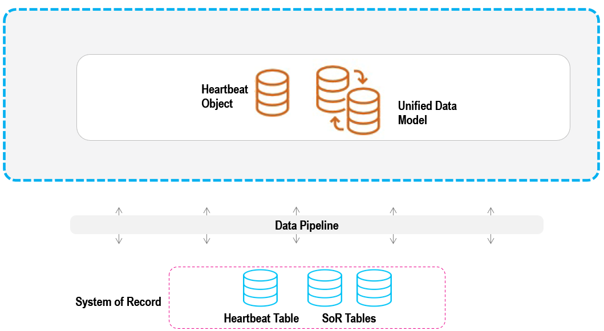
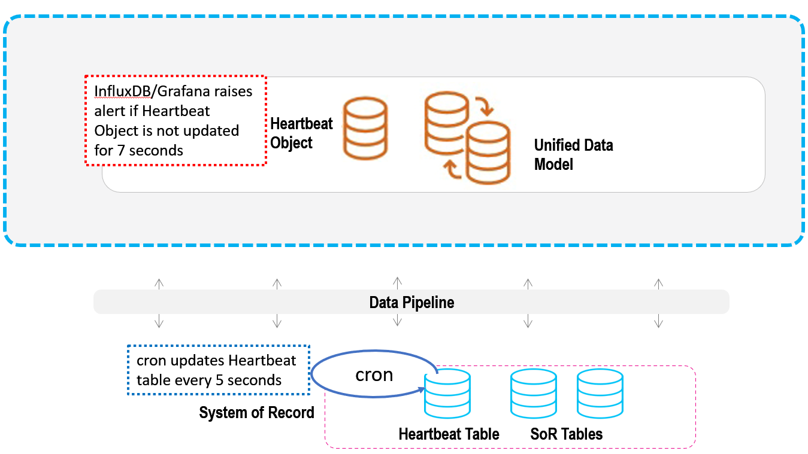

Data freshness refers to the period of time that has elapsed between an update to a table in the System of Record, and the corresponding update in the In-Memory Data Grid. Ideally, of course, this period of time would be as small as possible.
This topic explains how to implement a data freshness measurement in GigaSpaces.
Central to the establish of the data freshness metric is the creation of a Heartbeat table in the System of Record.
The Heartbeat table can be very small, perhaps only one row with one column of data. It is created for only one purpose: to be updated periodically by a cron job or other daemon process in the host system.

When we know how frequently the Heartbeat table is actually being updated in the System of Record, we can compare its actual SoR update frequency to how frequently it is also updated in the In-Memory Data Grid. The difference between these timings is the data freshness.
Create the Heartbeat table and add it to the System of Record.
Create a cron job or other daemon to periodically update the Heartbeat table every sor-update-frequency number of seconds. Take note of the time period sor-update-frequency between cron updates to the Heartbeat table.
Include the Heartbeat table in the
Using the
As an example, we may learn from the SoR devops that sor-update-frequency is 5 seconds. If we have an acceptable-data-lag of 2 seconds, then we would trigger an alert when the Heartbeat object has not been updated for 7 seconds.
This example setup is illustrated below.
